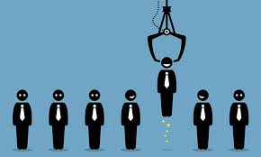

Каким бы профессиональным не был HR-специалист, часто бывает так что его чувства могут его обманывать и это нужно принять как должное. Действительно, профессиональных психологов среди HR-ов не так и много. В результате отсуствия заний о свойствах чевлоека, его мотивационной сферы, возрастной психологии и т.д. многие талантливые ребята остались без работы, а компании - без тех, кто мог бы помочь развиться. Но не стоит винить только тех, кто отбирает кандидатов. Львиная доля ошибок лежит и на соискателе, который не может себя продать. Тогда как купить то, что имеет потенциал а не внешний вид? Как определить где "неграненый алмаз", а где блестящая стеклашка? Психология располагает большим арсеналом средств, позволяющих определять устойчивые индивидуально-психологические особенности человека, а значит существует вероятность выявить ведущие свойства, вероятные способности и характерные вид дейстельности Традиционные методы изучения покупателя, как анкетирование, беседа, тесты, личностные опросники, имеют определенные ограничения, связанные с применением подобных методов. К таким методом можно пожготовится и сдать их на отлично. В результате мы имеем низкую достоверность результатов, наш работник, который показывал высокие результаты в тестах, " в поле" оказался "якорем". Поэтому и встает вопрос об использовании новых подходов, которые способны давать такие результаты, которые будут притягивать покупателя именно к Вам.
Невербальное поведение является внешней формой существования и проявления психического мира личности. Невербальное поведение многообразно как по своему составу (в него входят телодвижения, жесты, мимика и многие другие составляющие), так и по своим функциям. Изучение невербального поведения покупателя до момента общения и во время общения позволяет понять его особенности, составить его психологический портрет, правильно выстроить свое взаимодействие с ним.
Существуют различные приемы и методики визуальной психодиагностики, позволяющие на основании внешних признаков сделать вывод о внутренних свойствах и качествах личности. В качестве основного объекта визуальной диагностики можно рассматривать лицо человека, форму тела, рост и т.д. Для эффективного построения коммуникации с клиентом неолбходимо всего несколько минут для того что бы выбрать необходимые средства общения и стратегию поведения.
Под моим руководством вы можете изучить методику идентификации будущего работника по признакам внешности (чертам лица и тела). Методика представляет собой визуальное определение предрасположенностей человека (экстраверсии или интроверсии, сенсорики или интуиции, мышления или чувствования, суждения или восприятия), образующих психологический тип человека, по их морфологическим проявлениям (чертам лица и тела). Основу методики составляют полученные в психологическом исследовании данные – выявленные статистически достоверные ассоциации и внешние признаки (черты лица и тела). Освоенная техника определения психологического типа человека позволяет успешно решать многие повседневные и профессиональные задачи HR-специалиста, во время собеседования.